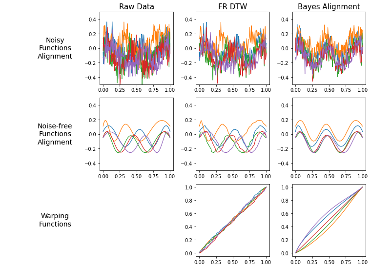
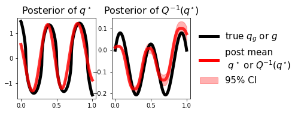

Bayesian Alignment Example Illustration
1 Model Description
This example illustrates the multiple function alignment problem using a Bayesian approach under SRVF representation. To deal with the noise in the data, we use hierarchical Bayesian modeling to smooth the data in the original function space and to estimate warping functions in the SRVF space.
Given each noisy observed data, \(\mathbf{y}_i\), which is a discretized realization of an absolutely continuous function, \(f_i\), it can be represented as follows: \[ \mathbf{y}_i = f_i([t]) + \mathbf{e}_i([t]) \] where \(\mathbf{e}_i([t]) \sim N(\mathbf{0}, \sigma^2_e \mathbf{I})\).
We provide the whole hierarchical model in detail as follows:
Level 1: Original function space \[ \mathbf{y}_i = f_i([t]) + \mathbf{e}_i, \quad \text{ and }\quad f_i(t) = a_i + \int_0^t \text{sign}(q_i(s))|q_i(s)|^2 ds \] where \(\mathbf{e}_i \sim N(\mathbf{0},\sigma^2_y\mathbf{I})\), and followings are the likelihood and prior densities: \[ \begin{align*} \mathbf{y}_{i} \, \mid \, q_i([t]),\, a_i \, & \sim N(\, f_i([t]),\, \sigma^2_y\,)\\ a_i & \sim N(\,0,\, \sigma^2_a\,) \end{align*} \]
Level 2: SRVF space \[ q_i(t) = (q^\star,\gamma_i)(t) + \epsilon_i(t) \] where \(\epsilon_i \sim GP(\mathbf{0},\mathcal{K}_q)\), and followings are the likelihood and prior densities: \[ \begin{align*} q_{i}([t])\, \mid \, h_{i}([t]), \, q_g([t]) & \sim N(\, (q_g,\gamma_{h_i})([t]), \, \mathbf{K}_q\,)\\ h_i([t]) & \sim N(\,\mathbf{0}, \, \mathbf{K}_h\,)\\ q^{\star}([t]) & \sim N(\,\mathbf{0}, \, \mathbf{K}_{q^{\star}}\,) \end{align*} \] where \(\gamma_{h_i} := \psi^{-1}(h_i)\), the inverse CLR transformation of \(h_i\), and \(\mathbf{K}_\epsilon\), \(\mathbf{K}_h\), and \(\mathbf{K}_q\) are covariance matrices from the kernels, \(\mathcal{K}_\epsilon\), \(\mathcal{K}_h\), and \(\mathcal{K}_q\), respectively.
In this example, we assume that the covariance operators (\(\mathcal{K}q\), \(\mathcal{K}{q^\star}\), \(\mathcal{K}_h\)) and the noise variance (\(\sigma^2_y\)) are known.

Remark: Sampling the latent variable \(q_i\) requires jittering, and improper scaling of the covariance operator impacts posterior behavior: a large covariance leads to high uncertainty, while a small one slows convergence. Extensions to marginalize out \(q_i\) are possible.
2 Simulation Data
We simulate five functions with phase variations based on an underlying function \(g\) (black line), denoted as \(f_i\) in panel (a). By adding noise to \(f_i\), we obtain observations \(y_i\), shown in panel (b) of Figure 2.

3 Results
Applying our Bayesian alignment model, we estimate warping functions \(\gamma_i\) and aligned functions \(f_i\) in the SRVF space. Figure 3 compares raw data, Fisher-Rao DTW alignment, and Bayesian alignment.

As shown, Fisher-Rao DTW struggles under noisy conditions, while our Bayesian method successfully recovers the true alignment structure.

The black lines correspond to the raw observed data: \(y_i\) in the original function space, and \(Q(y_i)\) in the SRVF space, where \(Q\) is the SRVF operator.
The cyan curves represent posterior samples of the unaligned latent functions \(f_i\) and \(q_i\).
The blue curves represent posterior means of the aligned latent functions \(f_i\) and \(q_i\).
Figure 4 illustrates how the Bayesian model estimates both the unaligned and aligned versions of the latent functions.
cyan curves show posterior samples of the unaligned latent functions \(f_i\) and \(q_i\), reflecting the original phase variability.
blue curves show the posterior means after alignment, representing the smoothed and registered versions of \(f_i\) and \(q_i\).
black curves show the original noisy observations \(y_i\) and \(Q(y_i)\).
Notably, the differences between the cyan and blue curves highlight the phase correction achieved by the Bayesian alignment, especially for observations \(i=2\) and \(i=5\).

Figure 5 shows the estimated warping functions \(\gamma_i\) for each observation \(y_i\). The black line corresponds to the true warping function, and the red lines are the posterior means of \(\gamma_i\) with 95% credible intervals (shaded area). This figure demonstrates that our method accurately estimates warping functions, aligning closely with the true warping structure.

The red lines represent the posterior means of \(q^{\star}\) and \(Q^{-1}(q^{\star})\), along with 95% credible intervals (shaded areas).
Figure 6 displays the posterior estimates for \(q^{\star}\) and its inverse mapping \(Q^{-1}(q^{\star})\).
(Left panel) the red curve shows the posterior mean of \(q^{\star}\), closely resembling the true SRVF \(g_q\) (black curve).
(Right panel), the red curve shows the posterior mean of \(Q^{-1}(q^{\star})\), compared with the true underlying function \(g\) (black curve).
While the posterior mean of \(Q^{-1}(q^{\star})\) appears close to \(g\), the model is fundamentally designed to estimate a valid template \(q^{\star}\) in SRVF space rather than to recover \(g\) in an unbiased manner. These results highlight the model’s effectiveness in constructing a representative template structure aligned with the underlying variation across functions.
4 Conclusion
This Bayesian hierarchical model for functional alignment under SRVF representation provides robust smoothing and warping estimates, significantly outperforming optimization-based methods like Fisher-Rao DTW under noisy conditions.